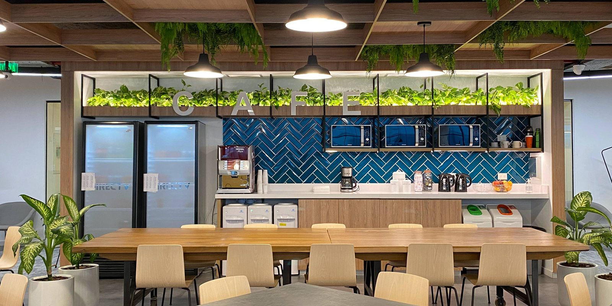

Restaurantrengøring og køkkenrengøring i Nykøbing F & på Lolland-Falster
– høj hygiejne, faste rutiner og et resultat, der kan mærkes i driften
Kundeanmeldelser
Det siger kunderne på Lolland-Falster om Schier Rengøring
Professionel restaurantrengøring, der passer til jeres tempo
I en restaurant og et professionelt køkken er der mange flader, meget trafik og høje krav til hygiejne – hver dag. Vi kan hjælpe restauranter, caféer og storkøkkener i Nykøbing F og på Lolland-Falster med faste aftaler og tydelige rutiner, så både køkken og gæsteområde fremstår pænt, indbydende og klar til næste service.
Vi planlægger typisk opgaverne, så I kan holde fokus på mad og gæster: efter lukketid, tidlig morgen eller på tidspunkter, der giver ro i driften. I får en løsning, der er nem at være kunde i – med stabilt team og løbende opfølgning.
Derfor vælger restauranter os
- Fast team og ens kvalitet
I får som udgangspunkt de samme folk, så rutinerne sidder, og standarden bliver stabil. - Plan efter jeres køkken og egenkontrol
Vi tilpasser opgaver, frekvens og fokusområder, så det matcher jeres arbejdsgange og krav. - Fokus på fedt, stænkzoner og kontaktflader
Vi prioriterer de områder, hvor snavs hurtigt sætter sig: greb, håndtag, bordplader, stænk, paneler og udvalgte maskin- og arbejdsområder. - Fleksibel timing
Vi kan som regel gøre rent uden for åbningstid, så arbejdet udføres effektivt uden at være i vejen. - Produkter og metoder, der passer til fødevaremiljøer
Vi bruger midler og metoder, der er egnede til køkken- og serveringsområder – uden at gå på kompromis med resultatet.
Tryghed og kvalitet i praksis
- Tydelig opstart: gennemgang af lokaler, opgaver og forventninger.
- Klare rutiner for nøgler, alarm og adgang efter jeres retningslinjer.
- Tjekliste, så opgaverne udføres ensartet fra gang til gang.
- Løbende kvalitetstjek og hurtige justeringer, hvis behov ændrer sig.
Hvad kan indgå i en aftale om restaurantrengøring?
Indholdet afhænger af jeres køkken, åbningstider og belastning. Her er typiske opgaver:
Køkken og produktionsområder
- Aftørring og vask af frie overflader, bordplader og arbejdsstationer
- Fokus på stænkzoner, greb, håndtag og udvalgte kontaktflader
- Gulvvask og rengøring omkring arbejdszoner (inkl. kanter og hjørner)
- Rengøring af fliser, vægge i udsatte zoner og synlige fedtflader
- Tømning af affald og nye poser efter aftale
Serveringsområde, bar og gæstezoner
- Støvsugning og/eller gulvvask efter behov
- Aftørring af synlige flader (borde, kanter, gelændere m.m.)
- Opfriskning af indgang og de områder, gæster møder først
- Affaldshåndtering efter aftale
Lager, bagrum og personalefaciliteter
- Gulve og synlige flader
- Affalds- og sorteringsområde (rensning og opfriskning efter aftale)
- Personalerum/omklædning efter behov
- Administrative områder, som fx et kontor.
Toiletter
- Vask og desinficering af toilet, håndvask og armatur
- Spejle og overflader
- Gulve samt efter aftale genopfyldning af forbrugsvarer (papir, sæbe m.m.)
Ekstra ydelser (kan tilføjes)
- Periodisk hovedrengøring, hvor vi går mere i dybden på udsatte områder
- Ekstra indsats i travle perioder, ved events eller efter ombygning
- Særlige fokusopgaver efter aftale (fx ekstra fedt- og stænkzoner, detaljer i bestemte arbejdsstationer)
Sådan starter vi op
- Kort dialog og evt. besigtigelse – vi afklarer arealer, tidsrum, belastning og fokusområder.
- Plan og tjekliste – I får en klar aftale om opgaver, frekvens og standard.
- Opstart med kvalitet i fokus – vi finjusterer, så resultatet sidder rigtigt fra start.
- Løbende opfølgning – ændrer behovet sig, justerer vi uden bøvl.
- Kontakt os her hvis I har en konkret opgave i tankerne.
Køkkenrengøring, der støtter en stabil hverdag
Når der er faste rutiner og en ens standard, bliver det nemmere at holde orden mellem services, sikre et pænt helhedsindtryk og skabe et køkkenmiljø, der fungerer i praksis. Målet er enkelt: I skal kunne møde ind til lokaler, der er klar til drift – igen og igen.
FAQ om restaurantrengøring og køkkenrengøring
Hvad koster restaurantrengøring?
Prisen afhænger af størrelse, opgaveindhold, tidsrum og frekvens. Vi giver et uforpligtende tilbud baseret på en kort gennemgang af jeres behov.
Kan I gøre rent uden for åbningstid?
Ja, det kan som regel aftales, så vi arbejder, når der er ro i driften – fx efter lukketid eller tidlig morgen.
Kan vi få en fast medarbejder eller et fast team?
Det er målet i de fleste aftaler, fordi det giver mest stabil kvalitet og bedst kendskab til jeres rutiner.
Tilpasser I efter vores egenkontrol og arbejdsgange?
Ja. Vi planlægger opgaver og fokusområder, så det matcher jeres køkken, belastning og interne krav.
Kan I lave ekstra indsats i travle perioder eller ved events?
Ja – vi kan udvide efter aftale, fx ved sæsonspids, arrangementer eller når der er behov for en grundigere hovedrengøring.
Hvilke områder prioriterer I typisk mest?
De mest belastede zoner: stænkzoner, kontaktflader, gulve i arbejdsområder, affaldszoner samt de områder, gæster ser først.
Få et uforpligtende tilbud på restaurantrengøring
Fortæl kort om jeres restaurant eller køkken: areal, åbningstider, ønsket frekvens og særlige fokusområder. Så vender vi tilbage med et konkret tilbud og en plan, der passer til jeres drift.
Telefon: 50 50 76 65 | E-mail: my@schier.dk
Folemarken 59, 4800 Nykøbing F | CVR-nr. 38199633